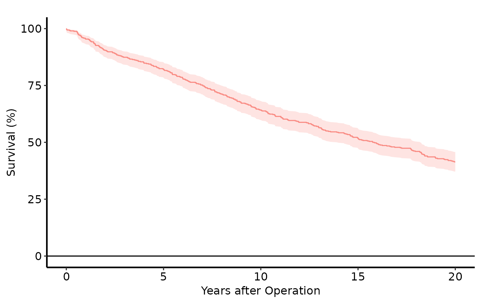
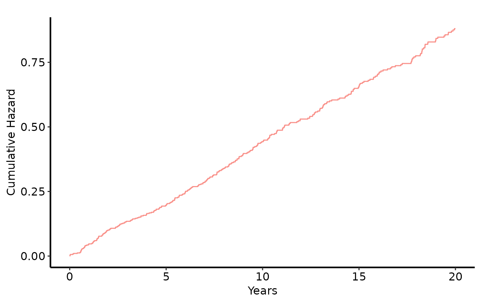
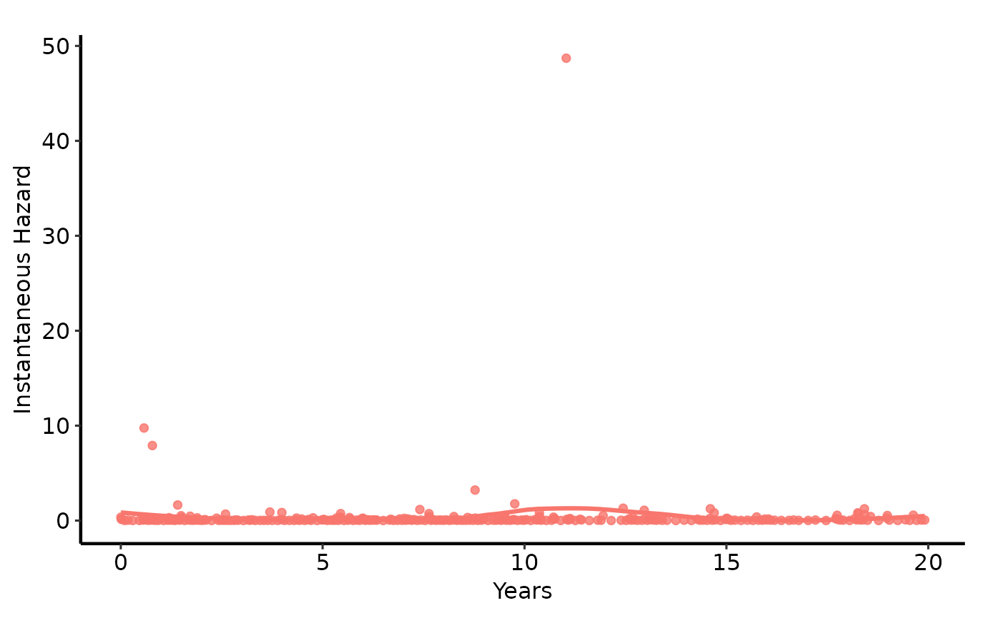

Builds a bare ggplot2 object from an hvti_survival
data object. The plot contains the correct aesthetics and geometries but
no scale, label, or theme modifications — add those with + as you
would with any ggplot2 object.
Arguments
- x
An
hvti_survivalobject.- type
Which plot variant to produce. One of:
"survival"(default,
PLOTS=1) KM step function with optional CI ribbon; y-axis on the 0–100 percent scale."cumhaz"(
PLOTC=1) Nelson-Aalen cumulative hazard \(H(t) = -\log S(t)\)."hazard"(
PLOTH=1) Instantaneous hazard \(h(t)\); addgeom_smooth(method="loess")for a smoothed publication curve."loglog"Log-log diagnostic: \(\log H(t)\) vs \(\log t\). Parallel lines across strata support proportional hazards.
"life"(
PLOTL=1) Restricted mean survival time (integral of \(S(t)\)) vs time.
- conf_int
Logical; draw a CI ribbon on the
"survival"plot. DefaultTRUE. Ignored for othertypevalues.- alpha
Line/point transparency in \([0,1]\). Default
0.8.- ...
Ignored; present for S3 consistency.
Value
A bare ggplot object; compose with +
to add scales, axis limits, labels, and hvti_theme.
See also
hvti_survival to build the data object,
hvti_theme for the publication theme.
Other Kaplan-Meier survival:
hvti_survival()
Examples
dta <- sample_survival_data(n = 500, seed = 42)
km <- hvti_survival(dta)
# Default survival curve
plot(km) +
ggplot2::labs(x = "Years after Operation", y = "Survival (%)") +
hvti_theme("manuscript")

# Cumulative hazard
plot(km, type = "cumhaz") +
ggplot2::labs(x = "Years", y = "Cumulative Hazard") +
hvti_theme("manuscript")

# Hazard rate with loess smoother
plot(km, type = "hazard") +
ggplot2::geom_smooth(
ggplot2::aes(x = .data[["mid_time"]], y = .data[["hazard"]]),
method = "loess", se = FALSE, span = 0.5
) +
ggplot2::labs(x = "Years", y = "Instantaneous Hazard") +
hvti_theme("manuscript")
#> `geom_smooth()` using formula = 'y ~ x'
